90% dos consumidores dizem que passam por até 6 canais diferentes em um único dia, como lojas físicas, on-line, celular, computador e tablet.
Veja as competências que serão adquiridas neste módulo.
Competência 1
Análise da transformação digital
Competência 2
Desenvolvimento de estratégia centrada no cliente
Competência 3
Avaliação crítica do uso de tecnologia no atendimento

Tópico 01
A importância da tecnologia e o novo meio digital
A importância da tecnologia e o novo meio digital são essenciais para entender as oportunidades que surgem na experiência do usuário no processo de compra. Com 84% dos brasileiros conectados, e muitos acessando a internet exclusivamente pelo celular, há um enorme potencial para criar experiências de compra mais intuitivas e acessíveis (CEBIT, 2024, on-line). Ao entender como as pessoas interagem com a tecnologia, as empresas podem personalizar suas abordagens, oferecendo soluções que aproveitem o crescente consumo de mídias digitais e a tendência de verificação de informações online. Isso abre portas para desenvolver estratégias que não apenas atendam, mas superem as expectativas dos consumidores, criando jornadas de compra mais engajadoras e seguras, e fortalecendo a fidelidade à marca.
A startup de vendas "BuyYou", ao ser solicitada por seus clientes para acompanhar as novidades do novo meio digital e entendendo que o consumidor precisava de inovações, decidiu buscar mais informações. A empresa analisou o que a concorrência estava fazendo e aprofundou seu conhecimento no mercado digital. Vamos explorar que mercado é esse?
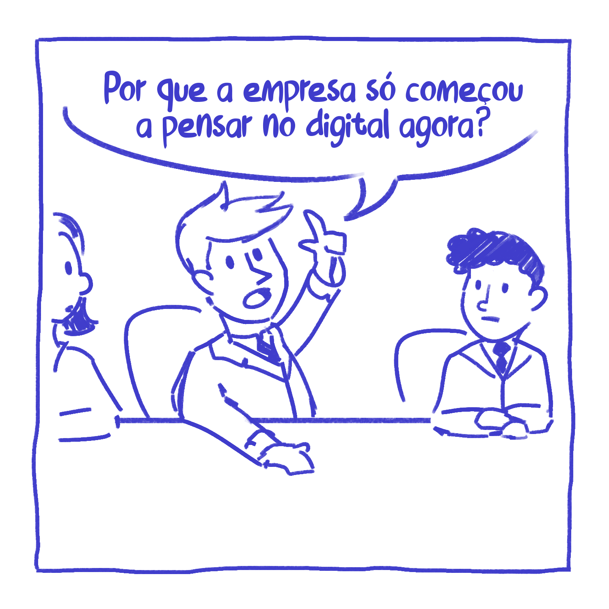
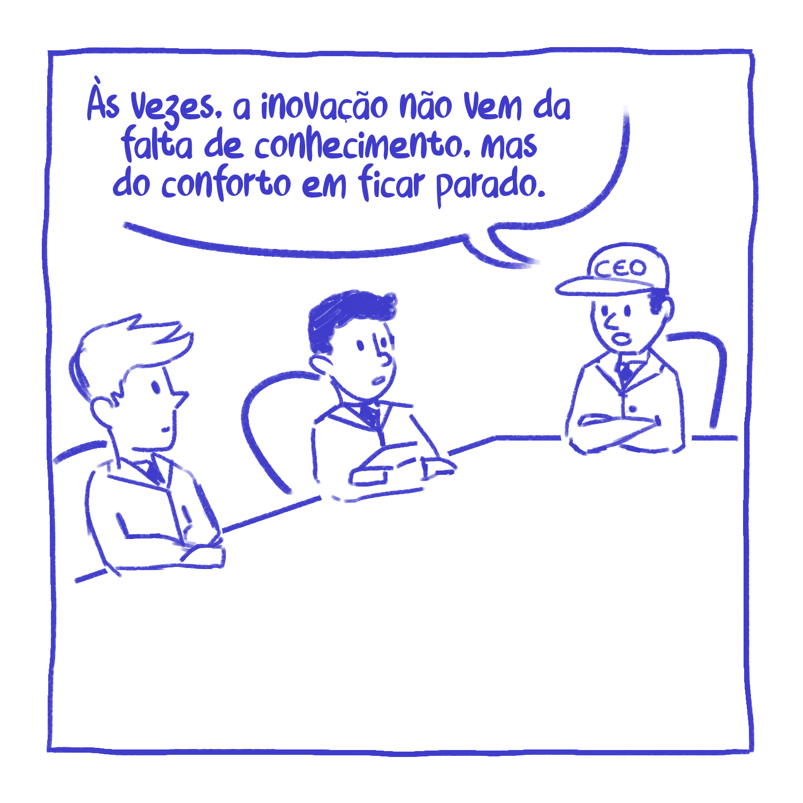
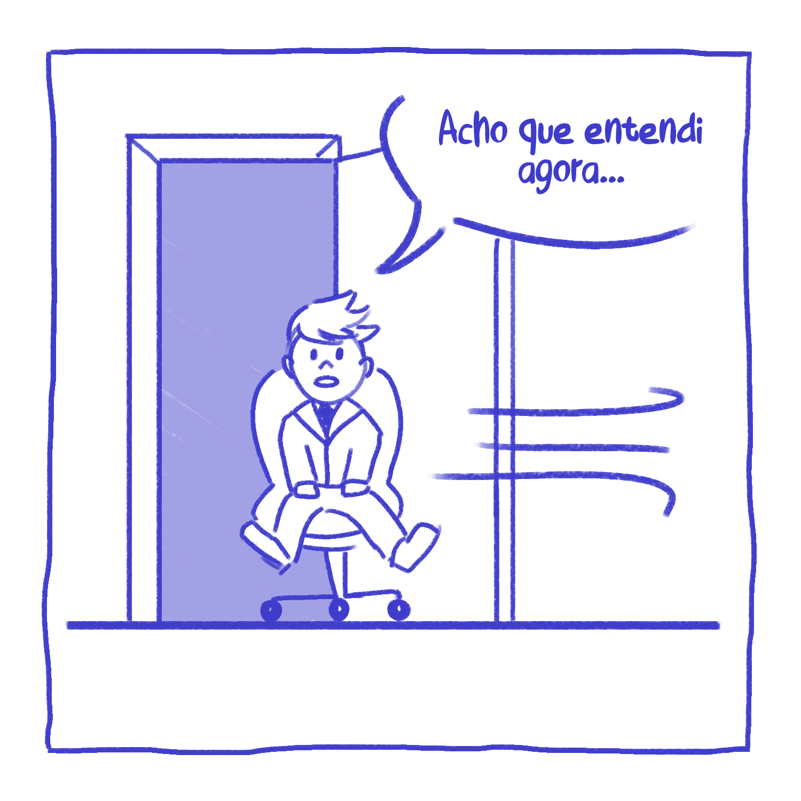
Vamos começar falando sobre o novo meio digital com uma frase de Daniel Domeneghetti, CEO da E-Consulting e responsável pelo estudo Régua da Transformação Digital:
"O digital se tornou essencial para as empresas. A inovação estará relacionada a como aproveitar os benefícios da transformação digital no dia a dia e no relacionamento com o cliente" (REDAÇÃO E-COMMERCE NEWS, 2018, on-line).
Interessante, não é? Esta frase deixa bem claro por que é tão importante estudarmos o meio digital. Então, vamos voltar ao passado!
Nos anos 80, as empresas começaram a perceber o potencial das tecnologias digitais, implementando sistemas como a Troca Eletrônica de Documentos (EDI) e a Transferência Eletrônica de Fundos (EFT). Essas inovações permitiram que transações e o envio de documentos fossem realizados de forma rápida e eficiente, marcando o início da digitalização dos processos empresariais. Na década seguinte, o advento da World Wide Web impulsionou ainda mais essa transformação, conectando empresas, profissionais e consumidores de uma maneira nunca antes vista.
A partir dos anos 90, a internet tornou-se a espinha dorsal da comunicação global, permitindo não apenas a troca de informações, mas também a criação de novos modelos de negócios, como o comércio eletrônico. Com o tempo, a digitalização evoluiu de simples transações online para estratégias complexas de negócios, integrando inteligência artificial, big data e automação. Hoje, a transformação digital é essencial para a competitividade das empresas, moldando o futuro dos mercados globais e redefinindo a relação entre empresas e consumidores.
Dados da ONU, mostram que 67% da população mundial, ou cerca de 5,4 bilhões de pessoas, utilizam a internet. Em regiões como Europa, Comunidade de Estados Independentes e Américas, aproximadamente 90% da população está conectada. Dê uma olhada neste relatório da União Internacional de Telecomunicações (UIT), que destaca o poder crescente do meio digital globalmente:
Gráfico 1 - Dados globais de acesso à Internet
Fonte: adaptada de Relatório UIT (2023).
Confira esses dados e veja como as vendas online estão cada vez mais dominando o mercado. Como você já deve ter percebido, as barreiras entre países, que antes dificultavam a comercialização de produtos, praticamente desapareceram, tornando o mercado global ainda mais competitivo (ROLON, 2018). Hoje em dia, podemos comprar de qualquer lugar, a qualquer hora, de qualquer parte do mundo, não é verdade?
Super combo
Com o crescimento do meio on-line, as empresas estão sendo cada vez mais impactadas pela Internet e suas tecnologias. Um bom exemplo disso é a pesquisa "Maturidade do Marketing Digital e Vendas no Brasil", que mostrou que 94% das empresas já investem em ações on-line, e 40,5% delas afirmam ter uma grande demanda digital, usando ferramentas como e-mail marketing, redes sociais e mídias pagas.
Além disso, um estudo do Serviço de Proteção ao Crédito (SPC Brasil) revelou que cerca de 39% dos clientes verificam os perfis de lojas e empresas nas redes sociais antes de fazer uma compra (PORTAL COMUNIQUE-SE, 2021). E tem mais: de acordo com dados da Associação Brasileira de Comércio Eletrônico (ABComm) o e-commerce atingiram a marca de R$44,2 bilhões no primeiro trimestre de 2024, mostrando um crescimento de 9,7% com relação ao ano de 2023. As projeções da ABComm indicam que o comércio eletrônico deve seguir em amplo desenvolvimento, conforme podemos observar no gráfico a seguir:
Gráfico 2 - Quantidade de consumidores online
Fonte: adaptada de ABComm (2024).
@freepik
Ao longo do ano, o valor médio das compras subiu ainda mais, alcançando R$455,00 por compra. Além disso, foram realizadas mais de 353 milhões de entregas de compras on-line, um aumento de 16,9% em relação ao último ano. No Brasil, o uso da Internet chegou a 84% da população com 10 anos ou mais, o que dá cerca de 156 milhões de pessoas, estava online. No ano anterior, esse número era 81%. A pesquisa TIC Domicílios 2023, do Cetic.br, revelou esses dados.
Durante a pandemia do Coronavírus, 79% das empresas do setor digital relataram crescimento em 2021, e 90% dos líderes de Marketing desse segmento enxergaram uma grande necessidade de expandir suas ações de marketing digital (GARTNER, 2021). Como resultado desse novo cenário, impulsionado pela pandemia, em 2021 as vendas pelo e-commerce se tornaram a preferência de 71% dos brasileiros (BÚSSOLA, 2021).
Falando da importância da experiência no novo mundo digital:
E-commerce
Trends 2024
A onda de compras online, que bombou durante a pandemia e virou parte do dia a dia dos brasileiros, só está crescendo. Segundo a pesquisa "E-commerce Trends 2024", feita pela Octadesk junto com a Opinion Box, esse movimento continua evoluindo e mostrando que veio pra ficar.
Velocidade da Conexão
26% das casas com internet têm conexão de até 50 Mbps, e 27% não possuem banda larga fixa.
Acesso pelo Celular
58% dos usuários acessaram a internet apenas pelo celular
Consumo de Mídia
Entre os internautas, 65% ouviram música, 64% assistiram a vídeos e 29% ouviram podcasts.
Compras online por mês
62% dos consumidores fazem de duas a cinco compras online por mês.
Consumidores
85% dos brasileiros fazem pelo menos uma compra online por mês.
Redes Sociais
65% utilizam as redes sociais para pesquisar sobre o produto antes de finalizar o pagamento
Fica claro como é essencial estudar e se aprimorar nesse assunto para se destacar na sua carreira, não é?
Quando falamos da relação entre novas tecnologias e a experiência do cliente, a Acquia, uma líder em inovações e soluções no mercado de experiência digital, divulgou a edição de 2021 do Customer Experience Trend. De acordo com o relatório, “92% dos profissionais de marketing brasileiros afirmam que suas organizações mudaram a estratégia de experiência com o cliente digital nos últimos 18 meses, especialmente em resposta à Covid-19” (IPNEWS, 2021, on-line).
Como resultado, as jornadas dos clientes, tema que vamos explorar mais a fundo, agora envolvem um número cada vez maior de canais e dispositivos. Além disso, 91% dos consumidores brasileiros esperam que as marcas estejam presentes em todos os seus pontos de contato digitais, oferecendo uma experiência de compra completa em todas as etapas. Com a competitividade em alta, destacar-se está mais desafiador do que nunca, e essa busca precisa ser constante (BÚSSOLA, 2021).
Percebeu como é importante entender esses conceitos e o tema da experiência do consumidor?
Continuando com essa pesquisa, mais da metade dos profissionais entrevistados (53%) afirmou que, nos últimos 18 meses, suas organizações adotaram uma plataforma de experiência digital (DXP). Isso mostra que o mercado brasileiro está alinhado com a média global, que é de 55%. Essas ferramentas oferecem recursos de gerenciamento de conteúdo e de dados do cliente, ajudando empresas e profissionais de marketing, vendas e experiência do consumidor a oferecerem uma experiência consistente e personalizada em vários canais (BÚSSOLA, 2021).
Analisando todo esse cenário do meio digital e descobrindo, por meio da pesquisa de concorrência, que a maioria das empresas já estava presente digitalmente na vida dos clientes, a "BuyYou" começou a estruturar uma estratégia voltada para entrar nesse ambiente.
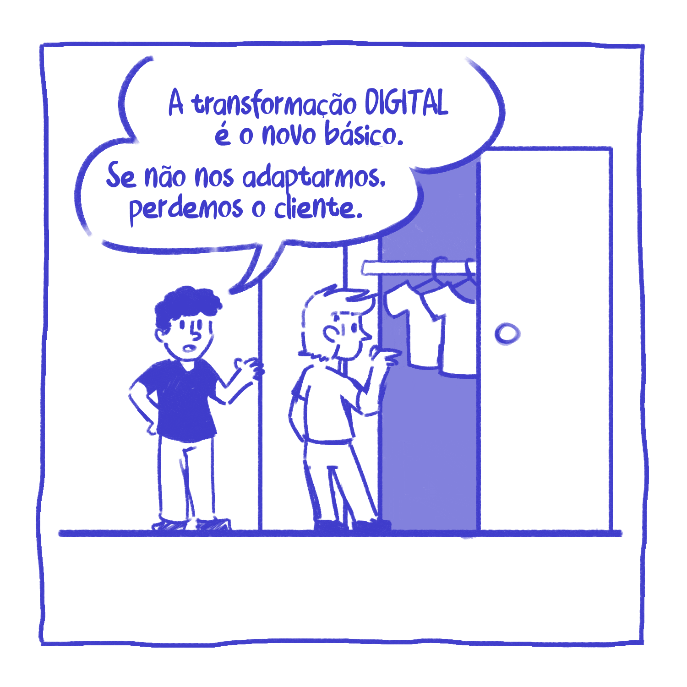
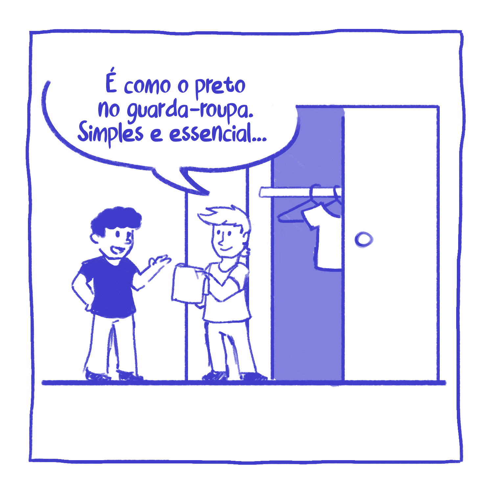
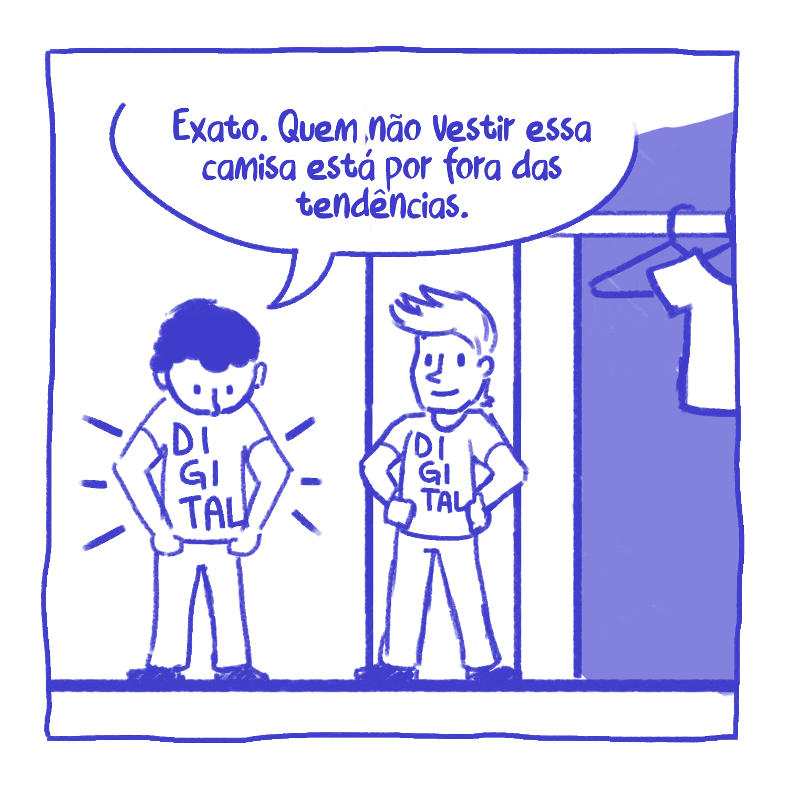
De acordo com a mesma pesquisa, "apenas 43% dos profissionais de marketing brasileiros dizem que suas organizações implementaram uma plataforma de dados do cliente nos últimos 18 meses, em comparação com 50% globalmente" (IPNEWS, 2021, on-line). Essa tecnologia centraliza os dados do cliente de vários sistemas, tornando-os acessíveis para toda a equipe, além de ajudar a entender melhor as tendências de aquisição de clientes, comportamento de compra e fidelidade (BÚSSOLA, 2021).
Além disso, a maioria dos profissionais entrevistados prevê aumentos modestos, mas significativos, nos orçamentos, cerca de 31% dos respondentes esperam um aumento de até 5% em seus orçamentos, enquanto 36% preveem um aumento de até 10%. Por outro lado, 7% acreditam que seus orçamentos permanecerão estáveis ou até diminuirão.
Infográfico 1 - Orçamento destinado a experiência do cliente.
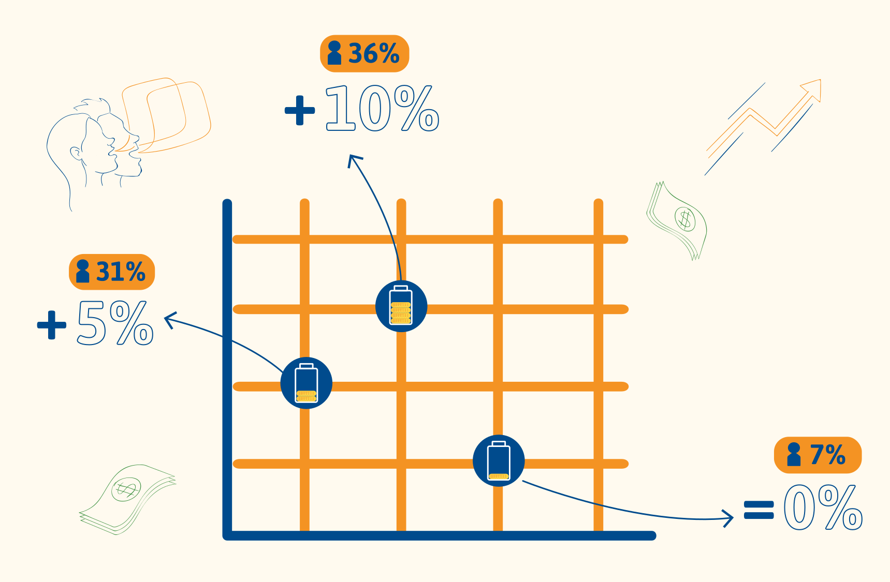
Fonte: adaptado de IPNEWS, 2021.
Por fim, 58% dos empresários brasileiros entrevistados dizem que precisam da ajuda de profissionais de tecnologia para criar experiências digitais para os clientes, enquanto 72% dos profissionais de marketing ao redor do mundo compartilham dessa mesma necessidade.
Por dentro do assunto
1. Qual foi o principal impulso para as empresas começarem a investir pesado no meio digital?
a) Expansão do comércio eletrônico
b) Criação de redes sociais
c) Percepção do poder da internet para vendas
d) Avanços em dispositivos móveis
Resposta correta: c) Percepção do poder da internet
Justificativa: As empresas começaram a investir no meio digital ao perceberem o grande potencial da internet para impulsionar os negócios e alcançar novos mercados de vendas.
Tópico 02
Tendências do Meio Digital
E como falar do meio digital sem mencionar as tecnologias? Afinal, são elas que impulsionam a transformação digital e elevam a experiência de compra dos usuários.
É exatamente sobre isso que vamos conversar neste tópico.
Vamos começar falando sobre a tendência dos provadores inteligentes. Já teve a chance de experimentar alguma roupa, óculos, tênis ou acessório em um desses?
A Ray-Ban desenvolveu um provador inteligente chamado Virtual Mirror, que permite que você experimente óculos virtualmente e encontre o modelo ideal para o seu rosto, considerando o tamanho, o formato e as características faciais. Essa tecnologia oferece uma experiência personalizada e conveniente, possibilitando que o cliente visualize como os óculos se ajustam ao seu rosto em diferentes condições.
Descubra como o provador virtual de óculos expande suas possibilidades de interação com produtos. Experimente diferentes modelos digitalmente e veja como a tecnologia está aprimorando a experiência do cliente, tornando a escolha mais personalizada e acessível.
Interação 1 - Exemplo de provador virtual para loja de óculos
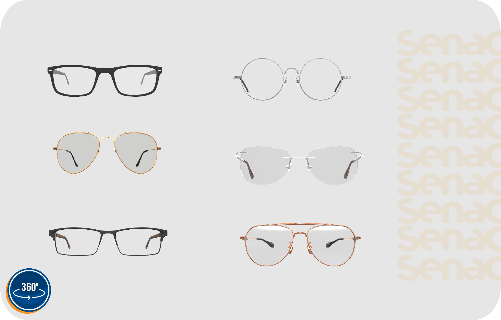
Fica a dica
O provador inteligente é uma tecnologia inovadora que transforma a experiência de compra ao permitir que os clientes experimentem produtos de forma virtual e personalizada. No caso dos óculos, o provador escaneia o rosto do cliente e simula diferentes armações digitalmente, mostrando como cada par fica no rosto sem a necessidade de experimentá-los fisicamente. Além disso, ele ajusta a visualização para diferentes condições de luz, garantindo uma escolha mais acertada. Para os lojistas, essa tecnologia fornece dados valiosos sobre preferências dos clientes, ajudando na gestão de estoque e estratégias de venda mais eficientes.
Uma tendência super interessante que ajuda o mercado e as empresas a entenderem melhor seus clientes é o uso dos dados de localização, ou mapas de calor (FERRAZ, 2018). Essa tecnologia foi criada em 1996 por Cormac Kinney para um software que transformava informações financeiras em tempo real em mosaicos coloridos, mostrando dimensões como preço, lucro e volume. Mais de 20 anos depois, os mapas de calor evoluíram e agora são uma ferramenta poderosa para os varejistas, criando representações visuais de dados que mostram como os clientes se comportam nas lojas.
O termo "calor" vem do fato de que essas áreas no mapa que mais chamam a atenção do cliente são destacadas em cores quentes, como vermelho, laranja e amarelo. Já as áreas com menor atratividade aparecem em tons mais suaves, como verde e azul.
Interação 2 - Tour virtual com mapa de calor em um shopping
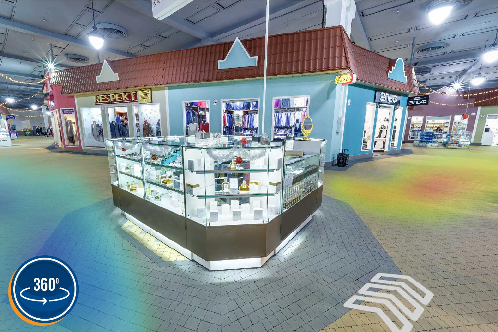
Fica a dica
O mapa de calor em tours virtuais é uma ferramenta inovadora que permite visualizar o comportamento dos usuários enquanto exploram um ambiente digital. Durante o tour virtual, o mapa de calor rastreia e destaca as áreas que mais atraem a atenção dos visitantes, usando cores quentes como vermelho e laranja para representar os pontos mais clicados ou visualizados, e cores frias como azul e verde para as áreas menos exploradas. Essa tecnologia oferece insights valiosos para entender o que chama mais atenção no ambiente, ajudando empresas e varejistas a otimizar a disposição de produtos e melhorar a experiência do usuário no espaço virtual.
Os dados de localização, como os mapas de calor, são ferramentas incríveis para entender o comportamento dos clientes e prever suas ações futuras. Analisando esses mapas, é possível ver com quais elementos os clientes mais interagem, seja um link no site ou uma prateleira na loja física. Isso ajuda a identificar problemas na navegação ou na disposição dos produtos que o varejista nem imaginava (ARAUJO, 2022).
Mas por que é tão importante entender isso? Porque, ao saber como os clientes se movimentam, seja numa loja física ou on-line, os profissionais de marketing conseguem colocar o cliente no centro das atenções. Eles entendem o que atrai o cliente, o que ele busca, e como ele se comporta dentro da loja (FERRAZ, 2023). Com isso, os mapas de calor mostram quais áreas são mais atrativas e quais são ignoradas, permitindo que os varejistas criem estratégias mais assertivas, tanto dentro da loja quanto fora dela (ARAUJO, 2022).
Super combo
Ciente do novo mercado digital e já atualizada sobre as tendências, a "BuyYou" reconheceu a necessidade de se modernizar para atender às demandas de seus clientes atuais e, ao mesmo tempo, atrair novos consumidores. No entanto, antes de avançar com qualquer ação, a empresa sabiamente decidiu primeiro compreender melhor quem é seu público-alvo e o que ele realmente busca.
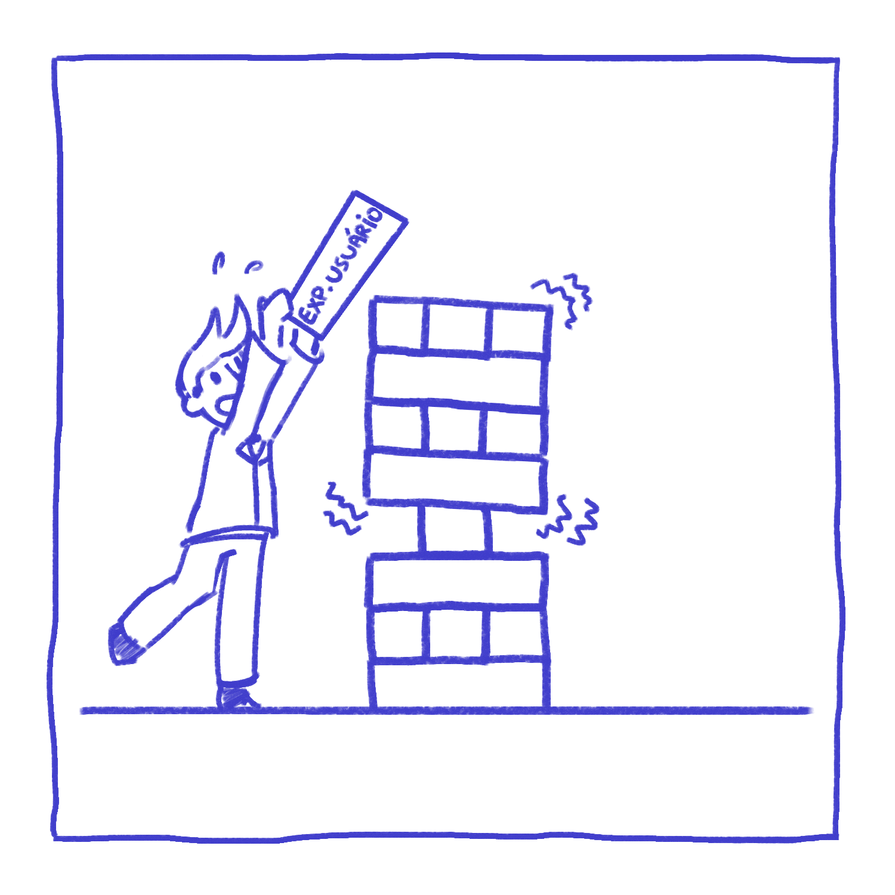
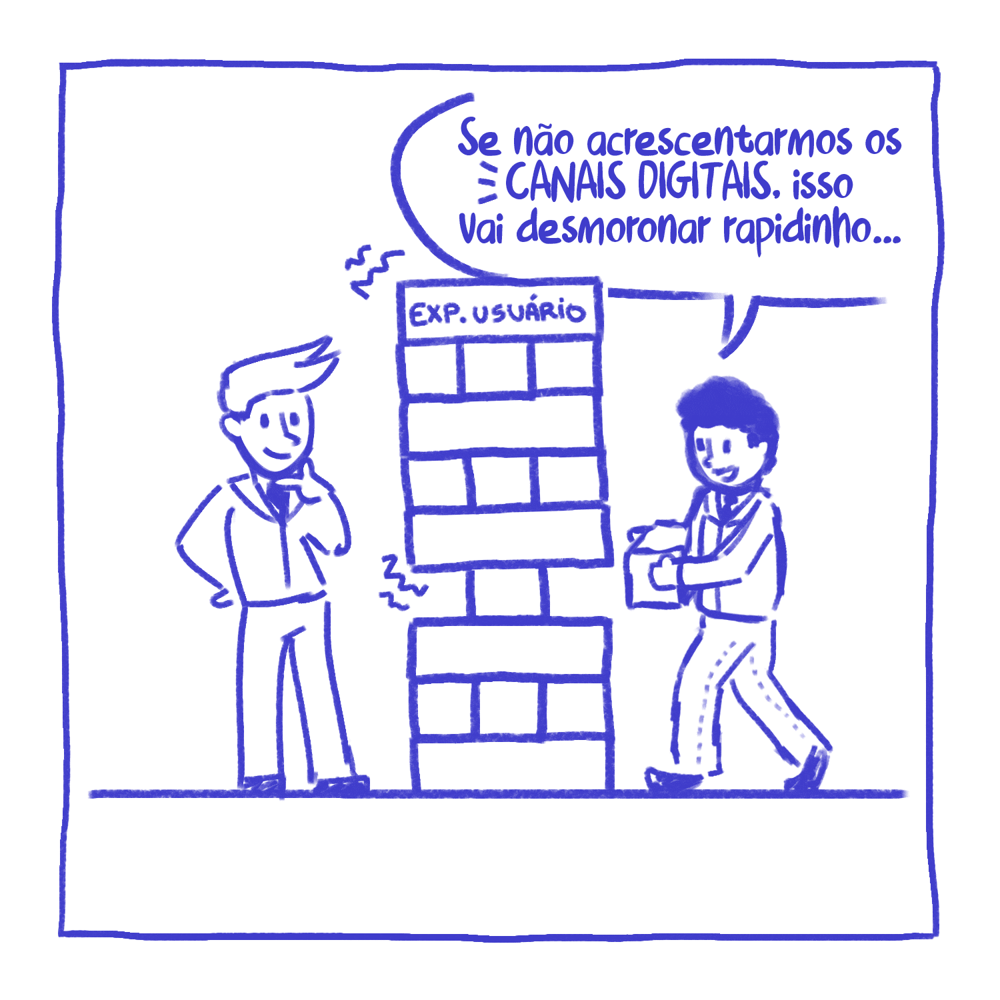
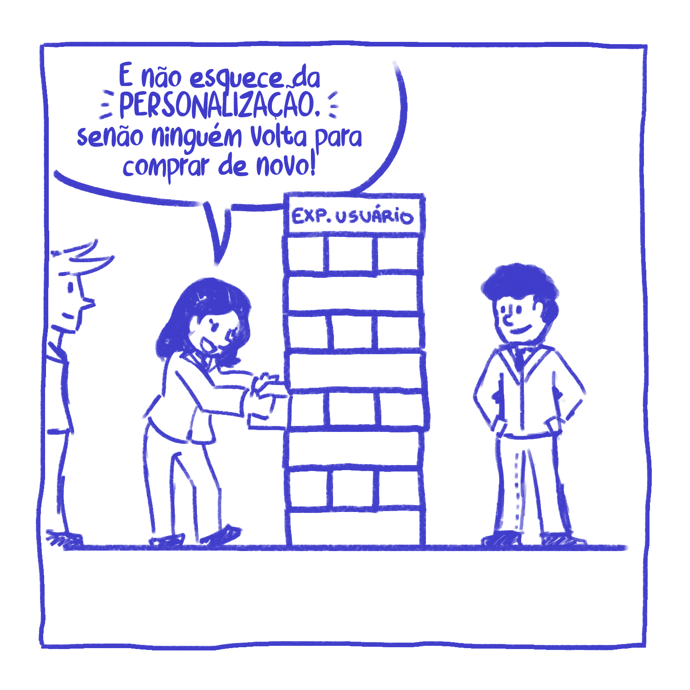
Outra tendência super importante é a Internet das Coisas (IoT), que conecta a web aos objetos do dia a dia por meio de sensores, redes e outros dispositivos. Isso abriu um mundo de possibilidades com produtos e serviços, como as smart homes e a automação de veículos (SEBRAE, 2021, on-line).
Aposto que você já tem algum desses gadgets por aí, certo?
Hoje em dia, os clientes querem experiências personalizadas e bem informadas – um tema que vamos explorar mais neste curso. E a tecnologia da Internet das Coisas oferece exatamente o que as lojas precisam para proporcionar essas experiências incríveis aos seus clientes.
Mas o que exatamente é essa "Internet das Coisas"?
A Internet das Coisas, tradução literal da expressão em inglês Internet of Things (IoT), nada mais é do que a conectividade que torna os objetos mais eficientes para receber atributos complementares (ALECRIM, 2016).
Nesse novo cenário, onde os objetos estão cada vez mais inteligentes e auxiliam cada vez mais os clientes, a adoção desses produtos está crescendo rapidamente. Para ter uma ideia, a estimativa é que, até 2026, o número de objetos conectados à internet no mundo seja 14 vezes maior do que a população mundial (GOMES; BERGAMO, 2021).
Super combo
Vamos, então, finalizar este tópico falando sobre a importância da tecnologia para a melhoria do atendimento, já que, conforme abordaremos em um próximo tópico, boa parte da responsabilidade por uma boa experiência de compra é do atendimento, que pode garantir que o cliente saia satisfeito, volte a comprar e gaste mais.
Uma pesquisa da Zendesk revela que até 8 em cada 10 clientes pagariam mais caro por um atendimento melhor e, por meio de softwares totalmente digitais e automatizados, é possível potencializar o atendimento para tirar dúvidas, esclarecer o que o cliente quer saber sobre os produtos e, consequentemente, garantir que sua experiência ao comprar seja mais tranquila (SEBRAE, 2021, on-line)
Radicalizando
Paradoxo do Valor do Atendimento:
Premissa 1: As pessoas pagam mais por produtos de qualidade superior.
Premissa 2: O atendimento é uma parte importante da experiência de consumo.
Conclusão Aparente: Portanto, as pessoas estariam dispostas a pagar mais por um café se o atendimento for excelente.
No entanto, o paradoxo surge quando consideramos:
Premissa 3: Algumas pessoas podem priorizar o preço ou a conveniência sobre o atendimento.
Conclusão Paradoxal: Se o preço do café aumentar significativamente devido ao atendimento, essas mesmas pessoas poderiam escolher um local com atendimento inferior, mas com um preço mais baixo.
Por dentro do assunto
2. Considerando a utilidade dos mapas de calor na análise do comportamento dos clientes, qual das seguintes estratégias de marketing seria a mais eficaz ao utilizar esses dados?
a) Reposicionar os produtos ou elementos de maior interesse nas áreas de menor interação para equilibrar o fluxo de clientes.
b) Utilizar os mapas de calor apenas como uma ferramenta secundária, priorizando pesquisas de opinião para a tomada de decisões.
c) Reduzir o número de produtos ou elementos nas áreas de maior interação para evitar sobrecarga de informações ao cliente.
d) Ignorar as áreas de menor interação, concentrando todos os esforços nas áreas de maior interesse.
Resposta correta: a) Reposicionar os produtos ou elementos de maior interesse nas áreas de menor interação para equilibrar o fluxo de clientes.
Justificativa: Reposicionar produtos ou elementos de maior interesse nas áreas de menor interação pode equilibrar o fluxo de clientes, otimizando o espaço disponível e aumentando a chance de conversão em todas as áreas da loja ou site. Isso alinha-se ao objetivo de colocar o cliente no centro das estratégias, melhorando a experiência de navegação e compra.
Tópico 03
Os novos modelos de comportamento, de estilo de vida e de consumo
Vivemos em um mundo onde os paradigmas estão mudando rapidamente. Isso acontece, em grande parte, por causa dos novos comportamentos dos clientes, que estão cada vez mais atarefados e em busca de opções que tornem a vida mais fácil e tranquila. Afinal, todos queremos encontrar um equilíbrio entre trabalho e vida pessoal, certo? Hoje em dia, esse novo perfil de cliente procura por produtos, lugares, e processos que ajudem a superar os desafios do cotidiano. Em outras palavras, a conveniência se tornou a palavra-chave (junto com "experiência") nesse novo mundo digital (THE NIELSEN COMPANY, 2018).
Agora, mais consciente dos impactos do meio digital e percebendo que a concorrência está muito bem posicionada online, oferecendo opções como agendamento via WhatsApp e entrega de produtos diretamente nas casas dos clientes, a "BuyYou" notou que, mesmo seus clientes mais fiéis não estavam tendo experiências de compra à altura das expectativas. Diante disso, a empresa decidiu explorar melhor as tendências digitais do mercado para avaliar a possibilidade de implementá-las de acordo com sua realidade.
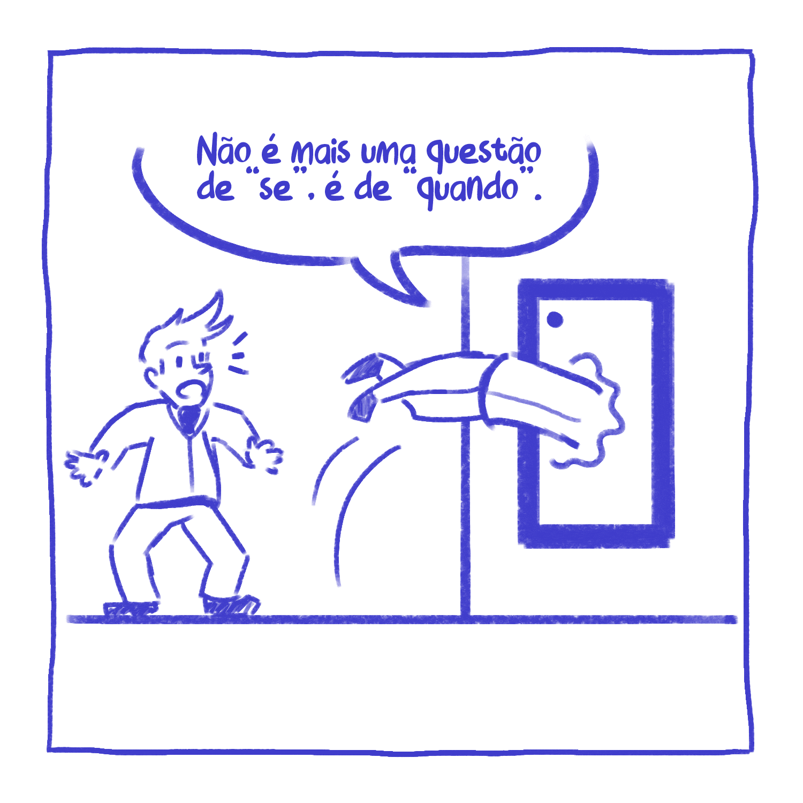
Essas mudanças no comportamento do cliente são, principalmente, reflexo das transformações que estão acontecendo no mundo em que vivemos (THE NIELSEN COMPANY, 2018).
Para continuarem bem-sucedidas, as empresas e os profissionais precisam se adaptar a essa nova realidade. Isso significa melhorar a experiência de consumo, entender o mercado em que atuam e oferecer conveniência aos clientes por meio de experiências diferenciadas.
O mercado on-line, impulsionado por clientes conectados e "no controle," valoriza o tempo e a facilidade que o e-commerce traz para a vida cotidiana. Por isso, a busca por conveniência é o foco do momento. Conveniência não é mais apenas um atributo de produtos ou serviços; tornou-se essencial para satisfazer as necessidades dos clientes (THE NIELSEN COMPANY, 2018). E com essa busca por conveniência, vem também a busca por experiências, tema que vamos explorar ao longo deste curso.
É evidente que os avanços tecnológicos e a força da Internet revolucionaram, e continuam a revolucionar, o mercado e a forma como clientes e empresas interagem. Nesse cenário digital, as possibilidades de compra se expandiram, permitindo aos consumidores explorar mais opções e regiões de compra do que nunca antes.

@shutterstock
Em 2021, mais de 4,6 bilhões de pessoas acessaram a internet, um aumento de 7% em relação a 2020. Em média, as pessoas passam 7 horas on-line por dia, com 2 horas dedicadas às redes sociais. O Brasil é o segundo país que mais acessa a internet, com os brasileiros passando cerca de 11 horas diárias conectados, principalmente para buscar informações e manter contato com amigos e familiares.
O cliente de hoje tem mais acesso à informação, o que cria novas necessidades e desejos, tornando o mercado mais competitivo. Esses clientes valorizam a relação custo-benefício e esperam um ótimo atendimento. Além disso, muitos se sentem cada vez mais confortáveis comprando on-line, preferindo esse método por não precisar lidar com vendedores.
Diante desse cenário de crescente conectividade e de consumidores cada vez mais exigentes, é fundamental que os e-commerces ofereçam experiências de compra que atendam a essas expectativas. A utilização de imagens de produtos em 360° é uma das maneiras mais eficazes de atrair e manter a atenção desses clientes, proporcionando uma visualização detalhada e interativa dos produtos. Essa inovação não só aumenta a confiança do consumidor na compra on-line.
Interação 3 - Exemplo de visualização de produtos em 360º
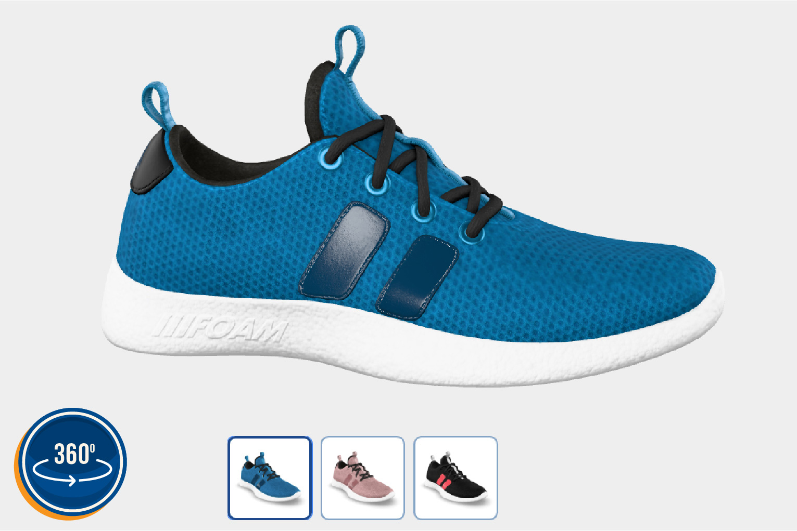
Fica a dica
Imagine que você está vendendo um par de tênis. Com imagens em 360°, o cliente pode visualizar todo produto, ver detalhes da costura, da sola, o acabamento, e diferentes modelos. Essa visualização ajuda a diminuir dúvidas e incertezas que os consumidores podem ter ao comprar on-line, essa aplicação diferencia seu e-commerce dos concorrentes, oferecendo uma experiência de usuário mais rica e envolvente.
No cenário atual, conhecer o comportamento de compra dos clientes é crucial para a sobrevivência de qualquer empresa. O novo cliente digital não se conecta apenas com os canais de venda, mas sim com as marcas, muitas vezes através de meios tecnológicos. Conveniência, conectividade e engajamento são as palavras-chave para atender a esse cliente.
O crescimento dos serviços de delivery on-line é um exemplo claro dessa mudança. De acordo com uma pesquisa da PayPal, os pedidos semanais de comida on-line aumentaram de 40,5% para 66,1%, e os pedidos diários subiram de 14,2% para 22,1%. Além disso, 20% dos clientes planejam manter esse hábito diário após a pandemia, e 58% continuarão com pedidos semanais.
Para garantir o sucesso, empresas e profissionais precisam estar preparados para oferecer soluções que tragam conveniência, conectividade e engajamento aos clientes.
A "BuyYou", ciente da importância de compreender seu público-alvo, começou a analisar os conceitos de conveniência, bem como os hábitos de vida e de consumo de seus clientes atuais e daqueles que deseja atrair.
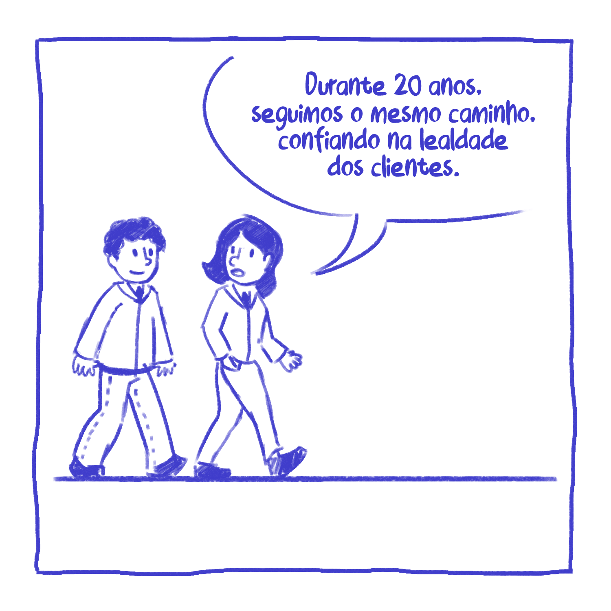
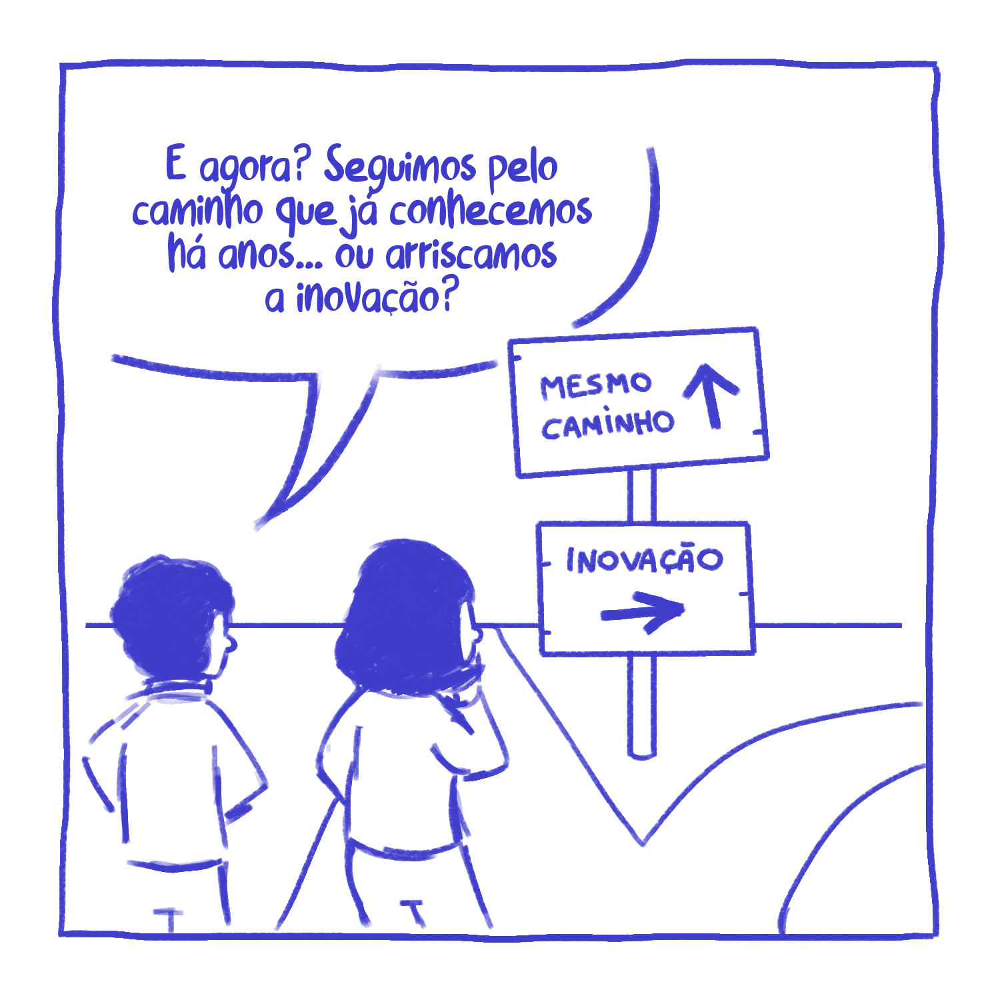
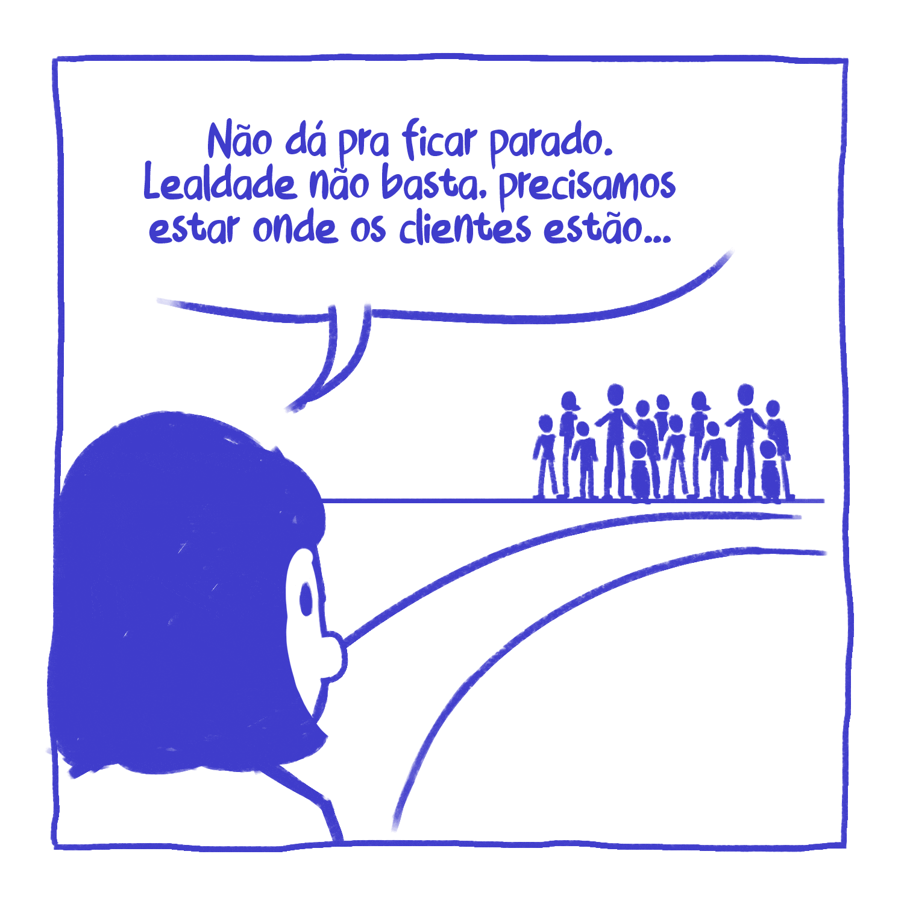
As gerações e seus modos de consumo e aprendizagem
Geração X (nascidos entre 1965 e 1980)
A Geração X é vista como uma ponte entre os Baby Boomers e as gerações mais jovens. Eles valorizam a praticidade e a funcionalidade, mas também buscam um equilíbrio entre qualidade e preço. Essa geração cresceu com o advento da tecnologia, mas ainda se lembra de um mundo pré-digital.
São consumidores céticos e fazem muita pesquisa antes de comprar, tanto on-line quanto offline. Valorizam a conveniência das compras on-line, mas também podem ser encontradas em lojas físicas. Eles são mais propensos a buscar produtos que simplificam a vida e economizam tempo. Quanto à forma de aprendizado, mesmo que adaptada às tecnologias, preza o consumo de informação de uma forma híbrida (on-line e offline) e valoriza a aprendizagem colaborativa, com o compartilhamento de conteúdos e o envolvimento das pessoas por meio de comentários.
Geração Y (Millennials) (nascidos entre 1981 e 1994)
Os Millennials são mais inclinados a valorizar a experiência de consumo tanto quanto o produto em si. Eles preferem marcas que sejam autênticas, éticas e que promovam valores com os quais se identificam, como sustentabilidade e responsabilidade social.
Esta geração é digitalmente nativa, preferindo fazer compras on-line e usando smartphones para isso. Eles são influenciados por avaliações on-line, redes sociais e tendências digitais. Além disso, estão mais dispostos a experimentar novas marcas e produtos, especialmente aqueles que oferecem conveniência e inovação. Esse público é informal, imediatista e valoriza a independência. Para a aprendizagem, opta pelo raciocínio linear, com percepções conectadas.
Geração Z (nascidos entre 1995 e 2010)
A Geração Z valoriza a personalização e a individualidade. Eles esperam que as marcas ofereçam produtos que possam ser adaptados às suas necessidades específicas. Sustentabilidade e diversidade são aspectos importantes que influenciam suas decisões de compra.
É uma geração altamente digital e socialmente conectada. Preferem compras on-line e têm uma relação próxima com as redes sociais, que são usadas tanto para descobrir novos produtos quanto para realizar compras. Eles tendem a valorizar a rapidez e a conveniência, muitas vezes optando por marcas que ofereçam serviços rápidos e eficientes, como entregas no mesmo dia. Na hora de consumir aprendizado, relaciona-se com as redes sociais, prefere vídeos curtos, fotos e jogos interativos, que convergem em diferentes plataformas e promovem um raciocínio não linear e multifocal. Aliás, esse público é considerado autodidata e lógico.
Pra mudar o mundo
Assista ao vídeo
Por dentro do assunto
3. Para atingir com eficácia o público-alvo das gerações X, Y e Z, a empresa decidiu personalizar a oferta de seu novo produto educacional. Considerando as características específicas de cada geração, qual das seguintes estratégias seria a mais eficaz?
a) Desenvolver um único produto que seja totalmente digital e acessível apenas on-line, visando a atender as expectativas das gerações X, Y e Z simultaneamente, enfatizando a conveniência e a rapidez.
b) Focar em criar um produto que valorize principalmente a sustentabilidade e a responsabilidade social, sem considerar as diferenças de consumo e aprendizagem entre as gerações.
c) Lançar um produto exclusivamente offline, com materiais impressos, que busca recuperar a experiência tradicional de aprendizado, com pouca ênfase em inovação tecnológica, para atender às três gerações.
d) Oferecer um produto híbrido, com materiais de aprendizado tanto on-line quanto offline, com foco na praticidade para a Geração X, criar experiências de marca autênticas e inovadoras para os Millennials, e incluir conteúdo personalizado, interativo e em múltiplas plataformas para a Geração Z.
Resposta correta: d) Oferecer um produto híbrido, com materiais de aprendizado tanto on-line quanto offline, com foco na praticidade para a Geração X, criar experiências de marca autênticas e inovadoras para os Millennials, e incluir conteúdo personalizado, interativo e em múltiplas plataformas para a Geração Z.
Justificativa: Essa é a alternativa correta porque considera as especificidades de consumo e aprendizagem de cada geração: a Geração X valoriza o equilíbrio entre o tradicional e o digital; os Millennials preferem experiências de marca autênticas e inovadoras; e a Geração Z demanda conteúdos personalizados e interativos que possam ser acessados em múltiplas plataformas.
Considerações finais
Ao longo deste módulo, exploramos como a transformação digital tem redefinido o mercado e a experiência do cliente. Desde a adoção de tecnologias como a Internet das Coisas (IoT) até a crescente importância do e-commerce, ficou claro que as empresas precisam se adaptar rapidamente para acompanhar as expectativas dos consumidores.
Observamos que a experiência do cliente, no novo meio digital, vai muito além da simples presença online. Ela envolve uma integração cuidadosa de diferentes canais e dispositivos, garantindo uma jornada de compra fluida e satisfatória. Tecnologias como provadores inteligentes, mapas de calor e plataformas de experiência digital destacam-se como ferramentas indispensáveis para oferecer uma experiência personalizada e conveniente, alinhada às necessidades dos consumidores modernos. A análise comportamental, por meio dessas tecnologias, permite que as empresas ajustem suas estratégias para maximizar a satisfação do cliente e sua fidelização.
Por fim, discutimos como os novos modelos de comportamento e consumo, influenciados pelas mudanças tecnológicas e sociais, exigem que as empresas estejam sempre atentas às expectativas de diferentes gerações. A personalização, a conveniência e a conectividade são palavras-chave que definem o sucesso no mercado digital. Portanto, compreender essas tendências e aplicá-las de forma estratégica é essencial para qualquer empresa que deseja se destacar e prosperar no cenário competitivo atual.
Sua próxima etapa é assistir à videoaula, onde você poderá ver os conceitos em ação e ampliar sua compreensão. Essa é uma ótima oportunidade para reforçar o aprendizado.
Assista ao vídeo
Material complementar
Livro
O jeito Disney de encantar os clientes: Do atendimento excepcional ao nunca parar de crescer e acreditar
Do atendimento excepcional ao nunca parar de crescer e acreditar.Todas as empresas buscam atingir a mesma meta: atender melhor as pessoas que compram seus produtos e serviços. Não importa se elas são chamadas de clientes, consumidores, pacientes ou, no caso da Disney, convidados. Ou você as satisfaz ou corre o risco de perdê-las.Apesar de as tendências para o ambiente de trabalho irem e virem, as empresas sempre precisarão encontrar novas e criativas maneiras de capitalizar a inteligência, a paixão e a energia criativa de sua força de trabalho. Pela primeira vez, o elemento mais importante da metodologia que está por trás da magia Disney será revelado? o atendimento de qualidade. Neste livro, nós o levaremos aos bastidores para mostrar as melhores práticas e filosofias da Disney em ação, proporcionando uma visão dos princípios de atendimento de qualidade na prática, tanto no Walt Disney World, sob o ponto de vista dos membros do elenco, quanto em outras organizações, de acordo com os executivos que participaram dos programas do Disney Institute. Você é o nosso convidado. Venha conhecer como fazemos magia todos os dias e o que faz da nossa empresa um sucesso lendário.
Livro
Apaixone-se pelo problema, não pela solução
Uri Levine construiu duas. E neste livro, ele mostra como fez isso.Como cofundador do Waze, o principal aplicativo de transporte e navegação do mundo, com mais de 700 milhões de usuários e adquirido pelo Google em 2013 por 1,15 bilhão de dólares, Levine está empenhado em disseminar o pensamento empreendedor para que outros fundadores, gestores e colaboradores do setor tecnológico possam construir suas próprias empresas altamente valorizadas.
Levine oferece uma visão interna da criação e venda do Waze e de seu segundo unicórnio, o Moovit, revelando a fórmula que levou essas empresas a competir com gigantes e veteranos do setor.
Apaixone-se pelo problema, não pela solução, oferece orientações valiosas de um dos empreendedores mais bem-sucedidos do mundo e capacita você a ir além e construir um negócio de sucesso, identificando os maiores problemas de seus consumidores e dos mercados ineficientes que atualmente os atendem.
Filme
Joy: O Nome do Sucesso
Inspirado em uma história real, o filme mostra a emocionante jornada de uma mulher que é ferozmente determinada a manter sua excêntrica e disfuncional família unida em face da aparentemente insuperável probabilidade. Motivada pela necessidade, engenhosidade e pelo sonho de uma vida, Joy triunfa como a fundadora e matriarca de um bilionário império, transformando sua vida e a de sua família.
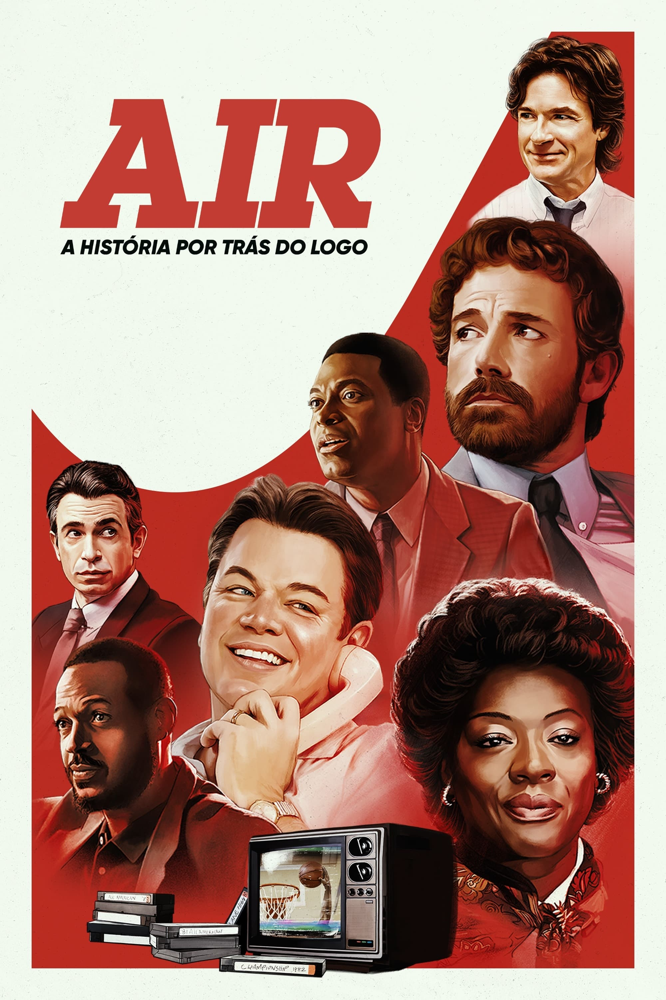
Filme
Air: A História por trás do Logo
Baseado na incrível história real do chefe da marca esportiva e de calçados Nike, Sonny Vaccaro (Matt Damon), e do fundador da Nike, Phil Knight (Ben Affleck). Ambos estão tentando tornar a marca uma das mais famosas do mundo, e escrever seus nomes na história. A dupla então tenta fazer com que a lenda do basquete Michael Jordan endosse seus produtos, ainda na década de 1980. O filme acompanha os esforços incansáveis dos dois membros da Nike para alcançar seus sonhos. E o que era só uma aposta, revolucionou o mundo dos esportes e da cultura contemporânea.
Referências Bibliográficas
ALECRIM, E. O que é Internet das Coisas?. 2016. Disponível em: https://www.infowester.com/iot.php. Acesso em: 21 jun. 2022.
ALTABOX. Ventajas de los mapas de calor en el punto de venta. [2022]. Disponível em: https://www.altabox.net/ventajas-de-los-mapas-de-calor-en-el-punto-de-venta/. Acesso em: 17 jun .2022.
ARAUJO, A. Mapa de calor: aprenda a mapear o comportamento do cliente na sua loja. E-commerce Brasil, 2018. Disponível em: https://www.ecommercebrasil.com.br/artigos/mapa-de-calor-cliente-na-loja/. Acesso em: 21 jun. 2022.
BALIEIRO, R. Brasil tem recorde de vendas on-line em 2021, aponta consultoria. CNN Brasil, 2022. Disponível em: https://www.cnnbrasil.com.br/business/brasil-tem-recorde-de-vendas-on-line-em-2021-aponta-consultoria/. Acesso em: 21 jun. 2022.
BÚSSOLA. O customer experience está mudando. Confira o que as marcas estão fazendo. Exame, 2021. Disponível em: https://exame.com/bussola/o-customer-experience-esta-mudando-confira-o-que-as-marcas-estao-fazendo/. Acesso em: 21 jun. 2022.
CENTA, S.; JUNIOR, A. Supervarejo: uma abordagem prática sobre os mercados de consumo. Curitiba: Intersaberes, 2014.
FERRAZ, A. A tecnologia que está revolucionando o varejo. Você está pronto? E-commerce Brasil, 2018. Disponível em: https://www.ecommercebrasil.com.br/artigos/a-tecnologia-que-esta-revolucionando-o-varejo-voce-esta-pronto/. Acesso em: 21 jun. 2022.
GASTIN, P.; RIBEIRO, P. Mudança no comportamento de compras no varejo de vestuário e acessórios. Marketing & Tourism Review, Belo Horizonte,v. 3, n. 2, ago, 2018.
GOMES, G.; BERGAMO, F. Chegou a Era da Internet das Coisas? Um Estudo sobre Adoção de Objetos Inteligentes no Contexto Brasileiro. Revista Brasileira de Marketing, 2018.
INNOVARE PESQUISAS. Infográfico: a Geração Y no Trabalho. 2015. Disponível em: https://innovarepesquisa.com.br/blog/infografico-geracao-y-trabalho/. Acesso em: 29 jun. 2022.
IPNEWS. 83% das empresas brasileiras está totalmente preparada para o futuro sem cookies. IPNews, 2021. Disponível em: https://ipnews.com.br/83-das-empresas-brasileiras-esta-totalmente-preparada-para-o-futuro-sem-cookies/. Acesso em: 21 jun. 2022.
LAS CASAS, A. Marketing de varejo. 5. ed. São Paulo: Atlas, 2013.
LINKA. Nova edição do global digital report mapeia hábitos dos internautas. Linka, 2021. Disponível em: https://www.linka.com.br/analytics/relatorio-global-do-digital-2021. Acesso em: 21 jun. 2022.
PORTAL COMUNIQUE-SE. Até 94% das empresas investem em Marketing Digital para crescer. Comunique-se, 2021. Disponível em: https://portal.comunique-se.com.br/259942-ate-94-das-empresas-investem-em-marketing-digital-para-crescer/. Acesso em: 21 jun. 2022.
PRADO, J. As mil e uma utilidades da realidade virtual e aumentada. Tecnoblog, 2016. Disponível em: https://tecnoblog.net/especiais/realidade-virtual-aumentada-aplicacao-diferenca-futuro/. Acesso em: 21 jun. 2022.
PRADO, M. Heat maps ajudam a entender o comportamento dos visitantes da sua página. Profissional de E-commerce, 2016. Disponível em: https://www.profissionaldeecommerce.com.br/heat-maps-ajudam-entender-o-comportamento-dos-visitantes-da-sua-pagina/. Acesso em: 21 jun. 2022.
PRESSE, F. Mais de um terço da população mundial não tem conexão com a internet, segundo a ONU. G1, 2021. Disponível em: https://g1.globo.com/tecnologia/noticia/2021/12/01/mais-de-um-terco-da-populacao-mundial-nao-tem-conexao-com-a-internet-segundo-a-onu.ghtml. Acesso em: 21 jun. 2022.
REDAÇÃO E-COMMERCE NEWS. Relatório E Consulting News. 2018. Disponível em: https://ecommercenews.com.br/author/e-commerce-news. Acesso em: 21 jun. 2022.
RELATÓRIO TOTVS. Para onde aponta o futuro do Varejo? 2018. Disponível em: https://www.totvs.com/blog/gestao-varejista/unified-commerce/. Acesso em: 23 jun. 2022.
ROLON, V. Composto mercadológico: conceitos, ideias e tendências. Curitiba: InterSaberes, 2018.
RUIZ, I. O que é um Mapa de Calor e como usá-lo para melhorar seu site. Mailrelay, 2018. Disponível em: https://mailrelay.com/pt/blog/2018/08/14/o-que-e-um-mapa-de-calor-e-como-usa-lo-para-melhorar-seu-site/. Acesso em: 21 jun. 2022.
SAS. Internet das Coisas (IoT). Inteligência Artificial - o que é e qual sua importância? SAS, 2018. Disponível em: https://www.sas.com/pt_br/insights/analytics/inteligencia-artificial.html. Acesso em: 21 jun. 2022.
SEBRAE. 7 tecnologias para melhorar a experiência de compra no varejo. Inovação Sebrae Minas, 2021. Disponível em: https://inovacaosebraeminas.com.br/7-tecnologias-para-melhorar-a-experiencia-de-compra-no-varejo/. Acesso em: 21 jun. 2022.
THE NIELSEN COMPANY. Em busca da conveniência. 2019. Disponível em: https://www.nielsen.com/wp-content/uploads/sites/3/2019/04/Em20busca20da20conveniencia.pdf. Acesso em: 23 jun. 2022.
TURCHI, S. Estratégias de Marketing Digital e E-Commerce. São Paulo: Editora Atlas S.A., 2012.
VALENTE, J. Pesquisa revela aumento de pedidos de comida por app durante pandemia. Agência Brasil, 2021. Disponível em: https://agenciabrasil.ebc.com.br/geral/noticia/2021-12/pesquisa-revela-aumento-de-pedidos-de-comida-por-app-durante-pandemia. Acesso em: 21 jun. 2022.
VIANA, A. Geração Dos Millennials: Onde Vivem, Como Pensam, Como Compram E Como Vendem. 2016. Disponível em: https://reev.co/geracao-dos-millennials/. Acesso em: 21 jun. 2022.
WHOH. Tecnologia como aliada da experiência de compra. WHOW, 2021. Disponível em: https://www.whow.com.br/tecnologia-como-aliada-da-experiencia-de-compra/. Acesso em: 21 jun. 2022.
ZEBRA TECHNOLOGIES. Retail Vision Study. 2017. Disponível em https://www.zebra.com/content/dam/zebra_new_ia/en-us/solutions-verticals/vertical-solutions/retail/vision-study/retail-vision-study-2017-en-gb.pdf. Acesso em: 23 jun. 2022.
Parabéns!
Você acaba de concluir uma etapa importante da sua jornada. Agora é hora de seguir em frente!